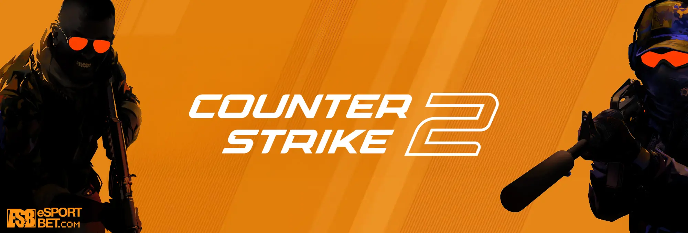
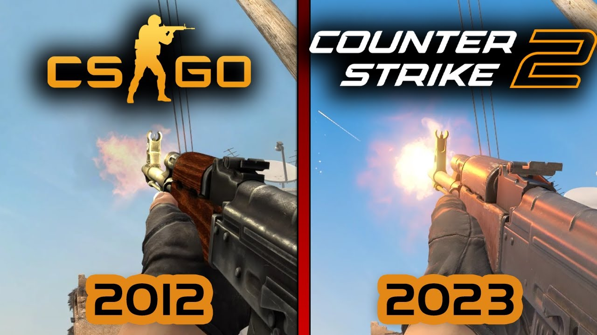
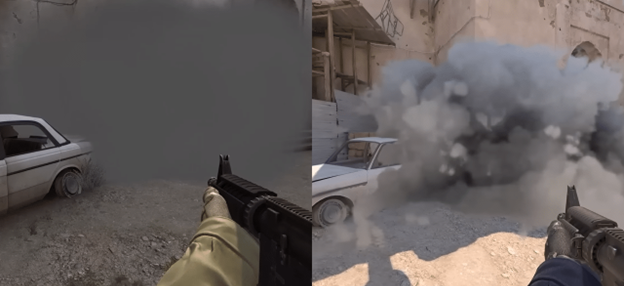
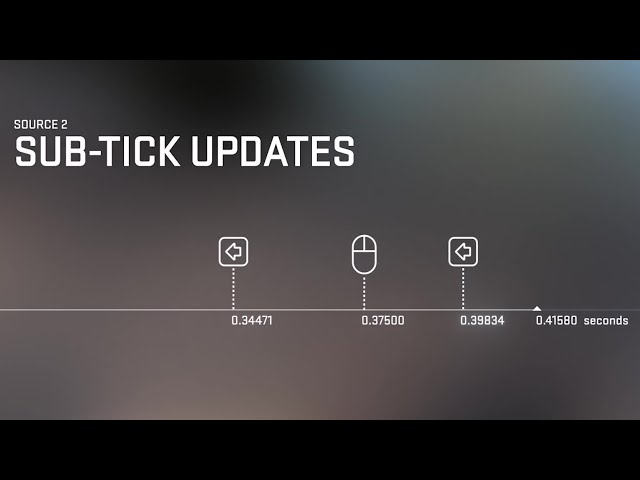
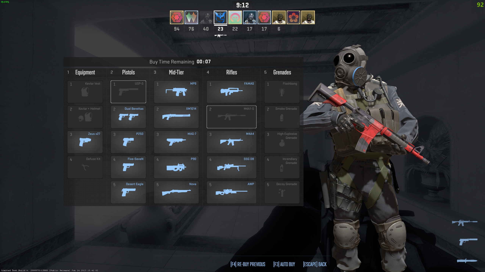
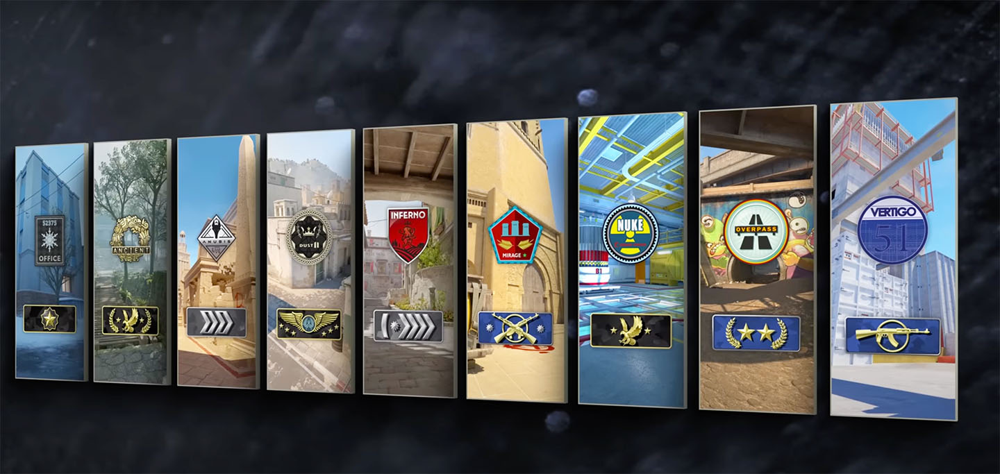

Counter-Strike 2 – A jövő FPS élménye
A Counter-Strike 2 (röviden CS2) a Valve legújabb FPS játéka, amely a több mint két évtizedes Counter-Strike hagyományt viszi tovább. A 2023 őszén megjelent játék a Source 2 motorra épül, és jelentős technikai, vizuális és játékmeneti újításokat hozott magával. A CS2 nem új játék, hanem a CS:GO hivatalos, ingyenes frissítése – teljesen új élményként tálalva ugyanazt az alapot.
Mi változott?
- Új grafikai motor (Source 2): A vizuális különbség óriási. A Source 2 valósághű fényekkel, részletes modellekkel és új pályadesignnal ruházza fel a játékot. 
- Dinamikus füstgránátok: Az egyik legnagyobb újítás, hogy a füst reagál a környezetre – kilőhető, kiszívható más gránátokkal, és valósághűen terjed. 
- Sub-tick rendszer: A CS2 elhagyja a régi tickrate-alapú inputot, helyette egy ún. sub-tick architektúrával dolgozik, ami pontosabb regisztrációt eredményez. 
- Újratervezett HUD és UI: Az új kezelőfelület letisztultabb, modern és sokkal jobban illeszkedik a mai elvárásokhoz. 
-
Frissített hangok és animációk: Új fegyverhangok, újrafelvett lépéshangok és látványosabb újratöltési animációk teszik modernebbé a játékmenetet.
- Jobban skálázható pályák: A pályák új verziói már a versenyképes játék szempontjából is optimalizálva lettek, de megőrizték az eredeti elrendezést. 
A CS2 egyszerre modernizál és tiszteleg az eredeti játék előtt. Bár a nosztalgikus érzés már nem ugyanaz, a Valve célja az volt, hogy a CS:GO és a CS 1.6 által lefektetett alapokat a jövő generációjának is elérhetővé tegye – méltó módon.